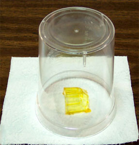
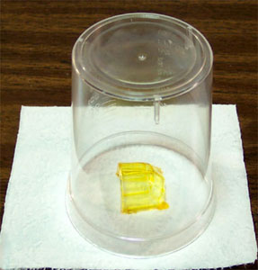
Tinting Future and Testing Tint Materials
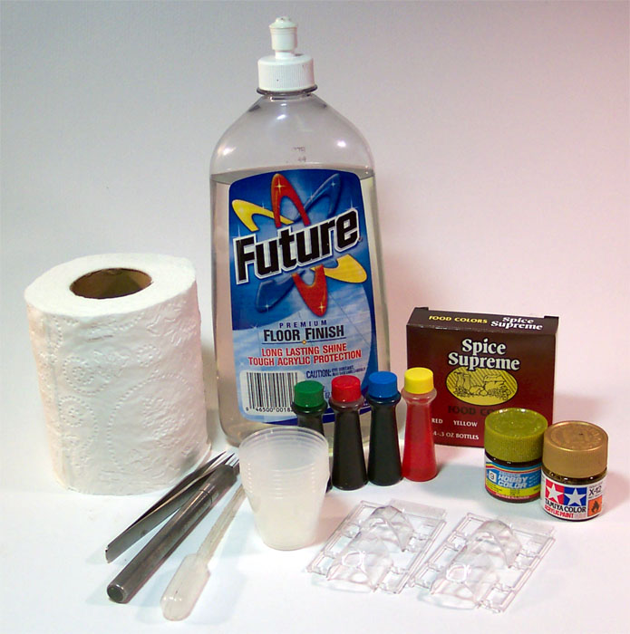
Images and text Copyright � 2003 by Matt Swan
It has become more and more common to see modern day aircraft featuring tinted canopies to reduce glare, sun blindness and eyestrain on the pilots. Unfortunately the modeling industry has largely ignored this feature and with the exception of a few kits, only provides clear canopies leaving it to the modeler to figure out just how the heck they will tint that plastic. Those who do provide tinted canopies often have the plastic colored incorrectly making the effort nearly useless. One alternative is to use a translucent paint. These have been few and far between in the past but are now becoming slightly more common. Another alternative that I feel gives the modeler more control is to tint Future floor finish and dip the clear canopies and that, my friends, is what we are going to talk about today.
As you cruise the forums, trade shows or peruse modeling magazines you may find advise to tint Future with food coloring or acrylic paint but the details get vague after that so I will address all those ideas, both good and bad. In the picture above you will see the basic instruments of this project. There is:
1. A bottle or Future floor finish. Read �The Complete Future� for alternative products outside the United States.
2. A roll of soft bathroom toilet tissue.
3. A pair of very fine tweezers.
4. A razor knife with a fresh blade.
5. Food coloring � nothing special � the cheapest I could find.
6. Some disposable 1-ounce measuring cups.
7. A plastic 1ml pipette.
8. A bottle of Tamiya Acrylic Gold X-12 Gold Leaf.
9. A bottle of Gunze-Sangyo Acrylic Gold 009.
10. Some sample pieces of clear polystyrene from the spares box.
First the part has to be prepared. Some modelers like to leave one piece of sprue in place to act as a handle for dipping. I like to have the part completely clean of all excess plastic. Fingerprints will repel the Future and dust particles will be very visible in the coating so it is important that the part be clean. I use a Micro-sheen tack cloth to remove all oils and dust particles just prior to dipping.
To prepare my Future solution for this test I have 5 parts future to 1 part yellow food coloring. Using a paintbrush handle I�ve mixed the food coloring into the Future completely. I�m holding the part with my fine tweezers and simply dipping it into the Future and out. The part gets placed onto a folded piece of tissue paper which will wick away the excess material and is covered with a larger plastic cup to prevent dust from settling on it. This will be allowed to set overnight.
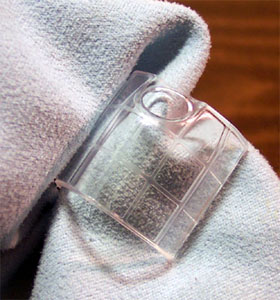
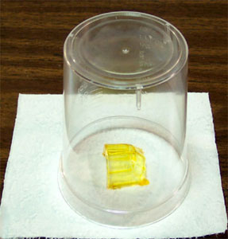
This part has a very yellow look to it, not quite what I was hoping for. Now I add two drops of green food coloring into the yellow batch and mix it well. Another canopy gets dipped in this solution and set to dry. The color in the cup is kind of hard to describe, kind of blackish green but the part has an slight bronze cast to it that looks closer to a contemporary jet canopy.
Now for the next test I will mix .5ml Tamiya Acrylic gold with one half ounce of Future. This requires a lot of mix time as the paint does not want to disperse well into the Future but after a few minutes it looks ready to test. The paint has a metallic flake in it that is causing a problem. The part is evenly coated with a metallic flake and will not be acceptable for use on a model.
With the flake issue in mind I move on to the Gunze-Sangyo Gold. I DO NOT mix this paint, instead I draw off some of the top liquid with my pipette leaving all the metallic particles in the bottom of the bottle. I mix .5ml of the top fluid with one half ounce of Future. Again there is trouble getting the paint to disperse well into the Future and, ultimately, I cannot get a good mix and you can see this in the dipped part.
In the first picture you can see a comparison between the yellow and the yellow with green added.
The second shot shows the Tamiya Gold coming out of the dip cup.
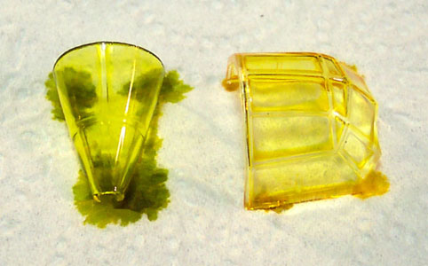
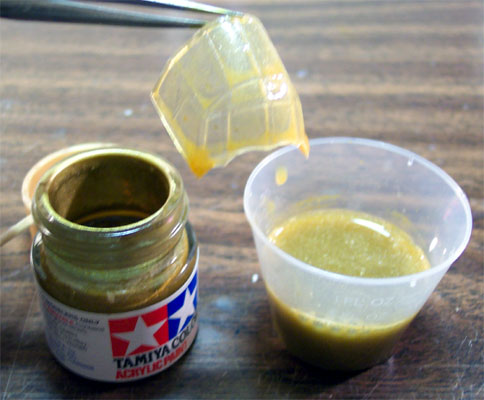
Looking at some done and dried pieces we have a yellow/green, a Tamiya Gold and a Gunze Gold
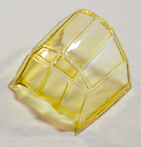
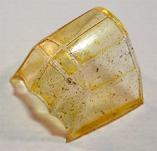
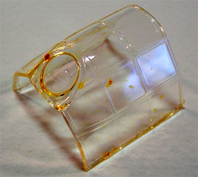
And the last three done and dried parts are the yellow only, a yellow/green and a Vacuformed piece in yellow/green.
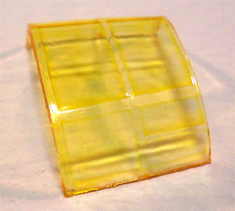
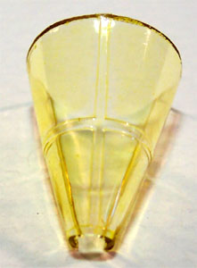
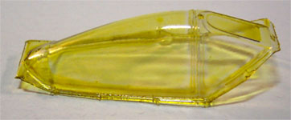
Conclusions and Observations
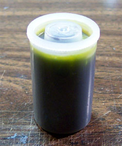
First thing that I noticed was that the Future did not want to coat evenly around the framing on the canopies. Now I have been sampling with WW2 German style canopies, which are very different in design than modern day canopies. For that reason I dipped a spare canopy from my Yak-15 to observe the coverage on a piece without a lot of framing. Still there was some lightening at the front frame. I think a better result may be achieved with a little less coloring in the Future and a second dip treatment. I think this would give a good result on something like a Prowler or A-8 canopy. Take note that the Yak-15 canopy is a vac piece and it gives identical results with Future. The gold paints failed miserably as tinting materials and I would stay away from that idea. Using combinations of the four basic food colors does give the modeler a wide range of tints to choose from to satisfy individual tastes.
A final idea for jet modelers and tinted Future is for those CRT screens. Use Future with green or blue food coloring and place a drop onto the painted or decaled screen to give a deep coloration. And what to do with all this tinted Future? I have many old film canisters kicking about and find these most useful for storage until the next tinting project.
Don�t rely on my testing as proof positive. Dig out some scrap clear parts and perform some tests of your own to determine the exact process you wish to follow before committing to a kit part and remember, if you really screw up a little Windex or other ammonia based glass cleaner will remove the Future and you can start all over again. For additional reading return to the home page and review �The Complete Future�.